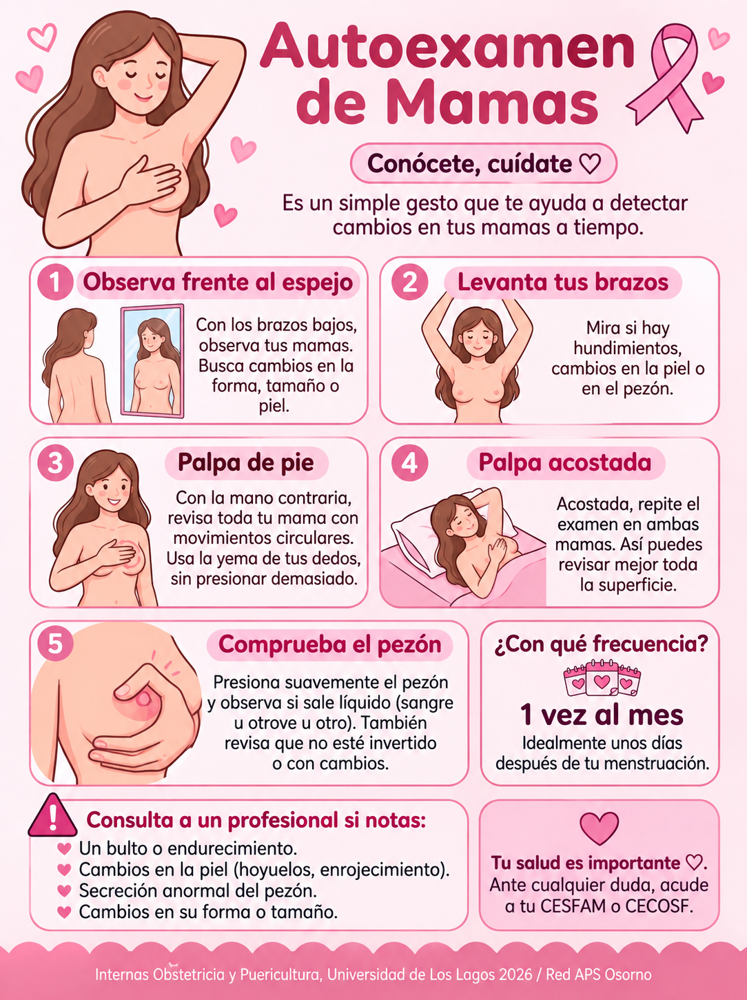

¡Prepara tu bolso de parto!
Una pequeña lista para ayudarte a tener todo listo para la llegada de tu bebé 💗
Tu lista de preparación
0 de 8 listos
Marca cada elemento a medida que lo vayas preparando. Tus selecciones quedarán guardadas en este dispositivo.
Recuerda revisar con tu maternidad si existe alguna indicación adicional para el día del ingreso.
Técnicas de Lactancia
Un buen acople es fundamental para evitar grietas y asegurar la nutrición de tu bebé. Revisa el siguiente video:
Signos de Alarma en el Embarazo

Signos de Alarma Ginecológicos

Autoexamen de Mamas

Anticonceptivos en APS
Métodos disponibles en tu CESFAM/CECOSF y sus efectos esperables:

Cuidados y Recomendaciones

Cuidados del Recién Nacido

¿Cuándo consultar a la Matrona?
Exámenes preventivos y frecuencias según norma MINSAL: